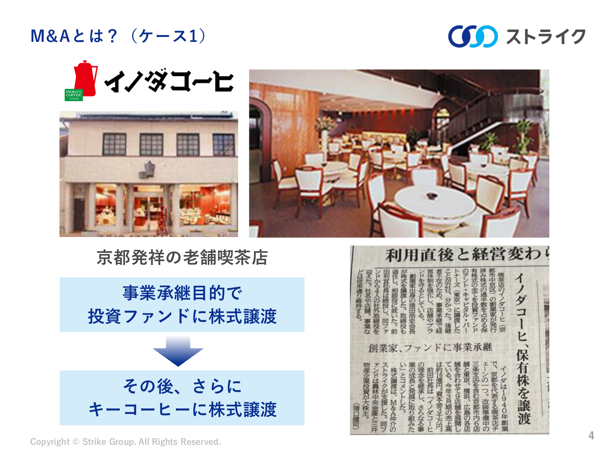

講義を通して言いたいこと
社長の仕事を引き継ぐことと、株式を引き継ぐことを分けて考えると、「事業承継のためにファンドへ売る」意味がわかる。
事業承継と株式譲渡についての質問と回答
想定読了時間 約3分解説 4｜イノダコーヒの事業承継
想定読了時間 約3分
事業承継とは何か？
事業承継とは、会社の経営や株式などを次の担い手に引き継ぎ、事業を続けていくことです。引継ぎ先には、親族、従業員、外部の企業や投資ファンドなどがあります。
ここでいう事業承継の前提は？ 社外の株主や、役職としての社長はどうなる？
ここで想定しているのは、創業者や創業家が、大株主として会社を所有し、経営にも強い影響力を持っている会社です。その人たちが引退などを考えたとき、「経営を誰に任せるか」と「保有する株式を誰に引き継ぐか」が課題になります。
この2つは別なので、次のような場合があります。
- 社外の株主が株式を持っている場合：その株主は保有し続け、社長だけ交代することもできます。社長の交代に合わせて株式を売る必要はありません。ただし、引退する創業者が大株主なら、その人の持株をどうするかは別に考える必要があります。
- 役職としての社長：会社の日々の経営を担う人です。株式を持っていなくても社長になれますし、株主がファンドに変わっても、同じ人が社長を続けることがあります。
イノダコーヒの事例では、社長はすでに創業家以外の人に交代していましたが、創業家は株式を持ち続けていました。そこで残っていた「会社の所有を誰に引き継ぐか」という課題を、ファンドへの株式譲渡で解決した、ということです。
なぜ投資ファンドに会社の所有権を渡したのか？ コーヒー会社の経営自体に貢献できるのか？
ファンドに期待されたのは、コーヒーの淹れ方ではなく、会社の組織や経営の仕組みを改善することです。
コーヒー会社にも、店ごとの売上・費用の管理、人材の配置、ネット販売、注文業務の効率化などが必要です。コーヒーの専門家と、こうした経営管理の専門家は、それぞれ違う部分で貢献できます。
イノダコーヒでは、社長が日々の経営を担いながら、ファンドが取締役を送り、組織改革や販売・業務の改善を支援しました。創業家と社長は、次の事業会社に引き継ぐ前に、会社の組織を強くしたいと考えていました。中小機構の事例紹介
では、なぜ助言を頼むだけでなく、株式まで渡すのでしょうか。創業家には株式の引継ぎ先が必要で、ファンドはその買手にもなれるからです。さらに、ファンドは株主になることで改革に関与でき、会社の価値が上がれば将来の株式売却で利益を得られます。
つまり、創業家の「所有を引き継いでほしい」という事情と、ファンドの「経営を改善して投資利益を得たい」という狙いが合った取引です。
そのあとキーコーヒーにまた譲渡したのはなぜ？
ファンドは会社を育てて投資を回収し、キーコーヒーは自社の事業として引き継ぐためです。
ファンドは一般に、株式を永久に持つのではなく、一定期間の経営支援の後に売却し、投資家へ資金と利益を返すことを目指します。今回の売却も、その投資回収にあたります。ただし、実際にいくら利益が出たかは別の話です。
一方、キーコーヒーは以前からイノダコーヒと商品販売や店舗展開で提携していました。イノダコーヒ側も、株式譲渡によってキーコーヒーのノウハウを取り込み、事業を伸ばすことを期待しています。イノダコーヒの発表
つまり、創業家からファンドへ所有を引き継ぎ、経営体制を整え、その後はコーヒー事業を営む企業へつないだ、という流れです。
原スライド：第4回「株価決定のメカニズム」p.4。概念説明は理解のための補足。